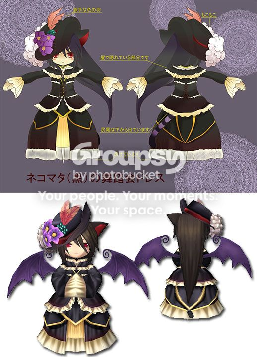
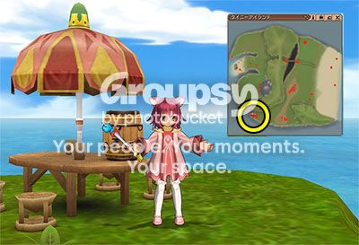
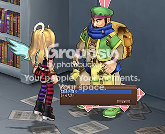
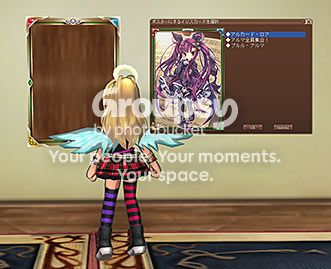
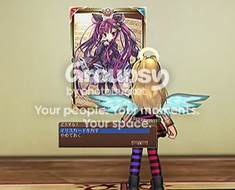

Re: [Sv.Japan] ECO NEWS [โหลดโหด!]
โอย น้ำตาจิไหล น้ำลายจิหก
อัลม่า 2 ตัวนี้น่าเลี้ยงมากมาย ยิ่งกว่าปุรุรุอีก
ติดที๋ตอนนี้แกลบอยู่
อัลม่า 2 ตัวนี้น่าเลี้ยงมากมาย ยิ่งกว่าปุรุรุอีก
ติดที๋ตอนนี้แกลบอยู่
http://eco.froztic.in.th/archive/ecofanclub/
http://eco.froztic.in.th/archive/ecofanclub/viewtopic.php?f=2&t=82695





homin เขียน:あれ。。。？
ได้ฟรีเลยเหรอครับ







homin เขียน:อ่ะ กระทู้หลุดหมุด
ผมอยากจะถามอะไรสักหน่อยนะครับ เกี่ยวกับเรื่องหนอนซิ่ง พอดีช่วงนี้กำลังฝึกน้องหนอนน้อยให้ไถพื้นได้เร็วขึ้น เลยอยากรู้ว่าตอนนี้ที่ญี่ปุ่นมีการปรับค่าสเตตัสโดยรวมของหนอนน้อย เพื่อเอาไปเป็นความเร็วของหนอนขี่ยังไงเหรอครับ
เมื่อวานลองฝึกดูแล้วอัพยากมากมาย เลยอยากจะรู้ไว้เป็นแนวทางว่าจะต้องล้มสักกี่ครั้งดี